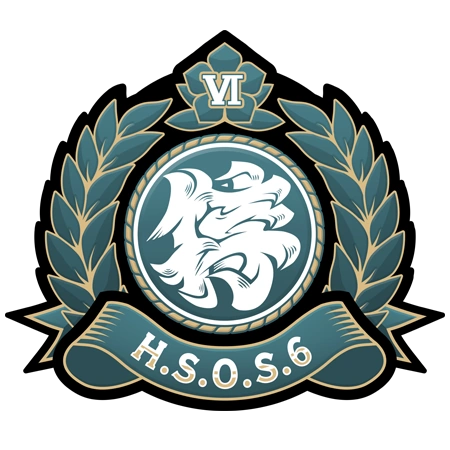
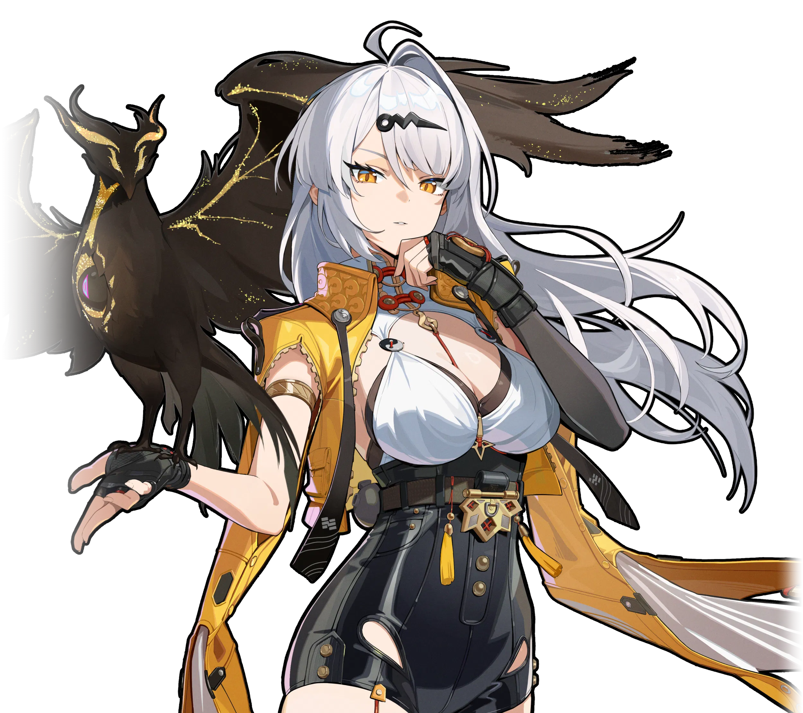

Selamat Datang di New Eridu
Zenless Zone Zero adalah game role playing action gratis yang dikembangkan dan
diterbitkan oleh miHoYo.
Game ini dirilis di luar Tiongkok daratan oleh HoYoverse.
Zenless Zone Zero dirilis di Windows , iOS , Android, dan PlayStation 5 pada tanggal 4 Juli 2024.
Versi port untuk Xbox Series X/S dirilis pada tanggal 6 Juni 2025. Game ini menerima ulasan
positif secara umum dari para kritikus, dengan pujian atas gameplay, soundtrack, animasi, dan
karakternya.
Gameplay & Combat System
Zenless Zone Zero mengusung sistem pertarungan real-time action yang
cepat, dinamis, dan berfokus pada kombinasi tim. Pemain mengendalikan skuad berisi tiga Agent yang dapat berganti secara instan di dalam pertempuran.
Kunci utama dari mekanik pertarungan ZZZ terletak pada eksekusi timing dan pengelolaan
status musuh:
-
Daze & Stun: Setiap serangan meningkatkan indikator Daze pada musuh. Ketika
Daze mencapai 100%, musuh akan mengalami efek
Stun dan menerima damage berlipat ganda.
-
Chain Attack: Memicu serangkaian serangan kombinasi otomatis
antar-Agent saat
melancarkan serangan berat (Heavy Attack) pada musuh yang sedang terkena efek
Stun.
-
Perfect Dodge & Defensive Assist: Menghindar tepat sebelum serangan
musuh
mengenai Agent untuk memicu efek slow-motion (Time Slow) atau melakukan
tangkisan balasan
Parry secara instan.
-
Attribute Anomaly: Melancarkan serangan elemen secara konsisten
(Physical,
Fire, Ice, Electric, Ether) untuk memicu efek status
khusus seperti
Burn, Freeze, Shock,
Compress, atau Assault.
Daftar Karakter Agent
AGENT INFO
Cunning Hares
Nicole Demara

Nicole

Catatan arsip lisensi Investigator HIA: Hollow Investigator - Nicole. Memiliki daya tahan Ether yang
baik. Diizinkan untuk melakukan eksplorasi, investigasi, menambang, serta tugas dasar lainnya di
dalam wilayah-wilayah Hollow yang sudah diketahui (termasuk Sub-Hollow). Peringatan: Berdasarkan
data yang terkait, lisensi Hollow Investigator Nicole sudah lama tidak diperbarui. Jika tidak
melakukan tes berbayar sebelum tanggal kedaluwarsa, maka ada risiko pencabutan lisensi.
AGENT INFO
Public Security - Criminal Investigation Special Response Team
Zhu Yuan

Public Security Officer

Catatan arsip lisensi Investigator HIA: Petugas Public Security - Zhu Yuan. Daya tahan Ether-nya
adalah rahasia. Zhu Yuan diizinkan untuk melakukan eksplorasi, investigasi, menambang, serta tugas
dasar di dalam wilayah-wilayah Hollow yang sudah diketahui (termasuk Sub-Hollow). Catatan: Arsip
tentang Zhu Yuan berasal dari departemen Tim Investigasi Kriminal, Janus Quarter, Public Security.
Informasi terkait bisa didapatkan dari sistem Public Security, namun sebuah izin khusus akan
diperlukan untuk mengaksesnya. P.S: Daya tahan Ether Zhu Yuan sangat luar biasa.
AGENT INFO
Hollow Special Operations Section 6
Hoshimi Miyabi

Void Hunter: Isshin Muga

Hoshimi Miyabi, Ketua Hollow Special Operations Section 6. Miyabi sering melakukan misi lapangan dan
masih tidak tahu di lantai mana rapat bulanan biasanya diadakan. Bahkan kalau bertemu Miyabi di
kantornya, kecil kemungkinannya dia sedang mengurus pekerjaan administratif, dan kemungkinan besar
dia sedang memoles pedangnya. Berkat kontribusinya yang luar biasa, dia diberi gelar Void Hunter dan
menjadi anggota elite di antara para elite di Section 6. Dia juga memiliki reputasi yang tinggi di
kalangan warga. Suatu kali, Miyabi tidak sengaja masuk ke acara offline "Fans Club Miyabi". Para
penggemarnya mengira Miyabi adalah seorang penggemar yang sangat mahir dalam cosplay dan acara
tersebut menghasilkan rekaman video yang sangat berharga. Hoshimi Miyabi adalah orang yang jujur dan
pragmatis.
AGENT INFO
Yunkui Summit
Yixuan

Void Hunter-level Investigator

Yixuan adalah master generasi ke-13 Yunkui Summit dan seorang Investigator setingkat Void Hunter
yang secara resmi diakui oleh Wali Kota Mayflower. Dia dulunya seorang yatim piatu yang mengembara
di dunia bersama kakak perempuannya sejak usia muda. Kemudian, master Yunkui Summit saat itu
merekrut mereka sebagai murid, dan mengajari mereka teknik-teknik Yunkui Summit. Selama masa ini,
Yixuan menunjukkan bakat yang luar biasa. Apa pun tekniknya, dia dapat menguasainya dengan cepat,
tidak hanya memahaminya secara menyeluruh tetapi juga menciptakan teknik uniknya sendiri. "Burung
Qingming" adalah salah satu teknik khusus yang dia kembangkan bersama kakaknya untuk membantunya
melenyapkan musuh dan mengusir roh jahat dalam berbagai situasi sulit dan berbahaya. Setelah menjadi
pemimpin sekte, dia menerima undangan dari wali kota Mayflower dan bergabung dengan HIA sebagai
Investigator Khusus dalam bentuk kerja sama.